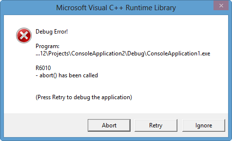

C++ Tutorial - Exceptions - 2017
Our programs sometimes have runtime problems that prevent from running normally.
A program may have division by zero, or page fault, or may request more memory than is available, or it may try to open an unavailable file, or it may see values it cannot handle. If these things happen, the control will be transferred to the OS from the process running a program. We call it exception. The exception is handled by the exception handler. After performing the exceptions, it returns the control to the user process running the program (resume) or it may simply abort the program.
Note that we can think of an exception as non-standard control flow such as interrupts or traps(such as break point) or faults. Here, the standard control flow means a normal control flow which includes jumps such as loops/if-else or calling a function. If a program wants to open a file, it is not a normal flow, because the user process should transfer the control to OS to read/write the file. After OS's done with the file, it returns the control to the user process and resume the program execution starting from where it left.
In general, there are three ways of handling error conditions:
- Aborting the program.
- Return an error code.
- Throwing exceptions.
We should avoid the first one at all cost although there are lots of examples of libraries that call abort() or exit().
But between (2) and (3), we do not have any agreement on which one is better. Let's start the comparison of the two with simple code:
The error code approach involves returning a numeric code to indicate the success/failure of a function:
if(object1.func() == ERROR) ErrorHandle(); if(object2.func() == ERROR) ErrorHandle(); if(object3.func() == ERROR) ErrorHandle();
But we can signal an error by throwing an object, and then catch it later:
try
{
object1.func();
object2.func();
object3.func();
}
catch (const std::exception &e;)
{
ErrorHandle();
}
- Error code approach
- Gives us a simple and robust way of reporting errors for individual functions.
- Exception approach
- Lets us separate error handling code from the normal flow of control, and makes our code more readable.
- We can catch one or more errors from several functions without having to check every single return code.
- Lets us handle an error up in the call stack instead of at the exact point of failure.
- It carries more information than a simple error code.
- Exceptions are the only way to report errors in a constructor.
- Handling an exception is expensive due to run-time stack unwinding.
- Uncaught exception can cause our program to abort, resulting in data loss.
- Writing exception safe code is tough, and it can lead to resource leaks if not done correctly.
- Using exceptions is an all-or-nothing approach. If any part of an application uses exception, then the entire application should be prepared to handle exceptions correctly.
The abort() function's prototype is in cstdlib header file. If called, it sends a message something like "abnormal program termination" to the standard error stream and terminate the program. It may also return an implementation-dependent value that indicates failure to the operating system. Whether abort() flushes the buffers depends on the implementation. So, if you prefer, you can use exit which does flush file buffers. But exit does not give any message as in the following examples.
Note that calling abort() from myCalculator terminates the program directly without returning main().
#include <iostream>
#include <cstdlib>
double myCalculator(double a, double b) {
if(a == b) {
std::cout << "abort()!" << std::endl;
abort();
}
return 1 / (a - b);
}
int main () {
double x,y,z;
x = 10;
y = 10;
z = myCalculator(x,y);
std::cout << "x = " << x << " y = " << y << " z = " << z << std::endl;
return 0;
}
Output is:
abort()!
and with an error message from my Visual Studio 2012:
Debug Error!

This application has requested the Runtime to terminate it in an unusual way.
If we switch the abort() to exit(1),
#include <iostream>
#include <cstdlib>
using namespace std;
double myCalculator(double a, double b) {
if(a == b) {
cout << "exit(1)!" << endl;
exit(1);
}
return 1 / (a - b);
}
int main () {
double x,y,z;
x = 10;
y = 10;
z = myCalculator(x,y);
cout << "x = " << x << " y = " << y << " z = " << z << endl;
return 0;
}
the program is terminated silently with a print out.exit(1)!
If we run the above code without abort() or exit(1), we get the following output.
x = 10 y = 10 z = 1.#INF
class A {};
A global_Obj;
int main()
{
A local_Obj;
static A static_Obj;
// return(0);
// exit(0);
// abort(0);
}
When called from main(), there are subtle differences:
- return
Destructors will be called for local/static/global objects. - exit
No destructors will be called for local objects. But destructor for static/global objects will be called. - abort
No destructors will be called.
This topic has been discussed in return statement vs exit() in main(), and here is the test code.
The exit() call
#include <stdlib.h> void exit(int status);is in fact a wrapper for the _exit() system call:
#include <unistd.h> void _exit(int status);Programs generally don't call _exit() directly, but instead call the exit() library function, which performs various actions before calling _exit().
However, unlike _exit(), which is UNIX-specific, exit() is defined as part of the standard C library; that is, it is available with every C implementation.
Actually, what the exit() does are following:
- The stdio stream buffers are flushed.
- The _exit() system call is invoked, using the value supplied in status.
In general, a process may terminate in two general ways:
- Abnormal termination caused by the delivery of a signal whose default action is to terminate the process (with or without a core dump)
- A Normal termination using the _exit() system call.
An explicit return of n from main() is generally equivalent to calling exit(n), since the run-time function that invokes main() uses the return value from main() in a call to exit().
Performing a return without specifying a value, or falling off the end of the main() function, also results in the caller of main() invoking exit(), and it is actually equivalent to calling exit(0) if we compile a program using gcc -std=c99 on Linux.
C++ exception is a response to an exceptional circumstance that arises while a programming is running. Exceptions provide a way to transfer control from one part of a program to another. This lets us separate error handling code from the normal flow of control, and makes our code more readable.
Exceptions provide a way to react to exceptional circumstances like the ones listed above by transferring control to special functions called handlers. Exception handling is a fundamental error reporting mechanism designed to handle the occurrence of exceptions, special conditions that change the normal execution flow of a program.
To catch exceptions we must place a portion of code under exception inspection. This is done by enclosing that portion of code in a try block. When an exceptional circumstance arises within that block, an exception is thrown, and transfers the control to the exception handler. If no exception is thrown, the code continues normally and all handlers are ignored.
Exception handling has three components:
- Throwing an exception
- Catching an exception with a handler
- Using a try block
A throw statement is a jump. In other words, it tells a program to jump to a statement at another location. It's followed by a value such as a character string or an object that indicates the nature of the exception.
Let's look at the following code:
#include <iostream>
using namespace std;
int main () {
try {
throw "Homemade exception";
// Because the function throws an exception,
// the rest of the code in this block will not be executed
...
...
}
// Execution will resume here
catch (const char* e) {
cout << "exception: " << e << endl;
}
return 0;
}
Its output is:
exception: Homemade exception
The try block has the code under exception handling. It just throws an exception:
throw "Homemade exception";A throw accepts one parameter which is passed as an argument to the exception handler.
The catch keyword declares the exception handler. It follows immediately the closing brace of the try block. The format for catch is similar to a regular function that always has at least one parameter. The type of this parameter is very important, since the type of the argument passed by the throw expression is checked against it. The exception is caught only when they match.
Multiple handlers (catch expressions) could be used, each one with a different parameter type. Only the handler that matches its type with the argument specified in the throw statement is executed.
Ellipsis (...) can be used as the parameter of catch. The handler will catch any exception no matter what the type of the throw exception is. This can be used as a default handler that catches all exceptions not caught by other handlers if it is specified at last:
#include <iostream>
using namespace std;
int main () {
try {
throw "Homemade exception";
}
catch (int e){
cout << "int exception: " << e << endl;
}
catch (char e){
cout << "char exception: " << e << endl;
}
catch (...) {
cout << "default exception ";
}
return 0;
}
In the example, the exception is caught at:
catch (...)The exception get caught is the exception thrown with any parameter that is neither an int nor a char.
After an exception has been handled, the program execution resumes after the try-catch block, not after the throw. The catch block can be, and usually is, located in a different function/method than the point of throwing. In this way, C++ supports non-local error handling.
Unhandled exceptions on the other hand will result in a function termination and the stack will be unwound (stack allocated objects will have destructors called) as it looks for an exception handler. If none is found it will ultimately result in the termination of the program.
How about nested try-catch blocks?
Yes, it is also possible to nest try-catch blocks within more external try blocks. In these cases, we have the possibility that an internal catch block forwards the exception to its outer level. This is done with the expression throw with no arguments.
Here is the example:
#include <iostream>
using namespace std;
int main () {
try {
try {
throw 911;
}
catch (int n) {
cout << "inner catch " << endl;
throw;
}
}
catch (...) {
cout << "catching any exception occurred" << endl;
}
return 0;
}
The output is:
inner catch catching any exception occurred
Function parameters are accessible in the try handler, however, local variables are NOT accessible in the try handler.
#include <iostream>
using namespace std;
void foo(int x)
{
try
{
int y = 9;
throw 911;
}
catch(int e)
{
cout << x << endl; // OK
cout << y << endl; // Not OK - local not accessible
}
}
int main()
{
foo(7);
return 0;
}
Destructors are often called during stack unwinding. When destructors are executing, the exception has been raised but not yet handled. It is not clear what should happen if a destructor itself throws a new exception during this stack unwinding process. Should the new exception supersede the earlier exception that has not been handled or the new exception thrown by the destructor ignored? In general, it's a bad idea for a destructor to do anything that might cause an exception.
Unlike destructors, it is often the case that something done inside a constructor might throw an exception. If it does while constructing an object, we may end up having a partially constructed object. Even in that case, we are guaranteed that the constructed elements will be properly destroyed.
We can limit the exception type it might directly or indirectly throw by appending a throw suffix to the function declaration:
float f(char param) throw (int);
This declares a function called f() which takes one argument of type char and returns an element of type float. The only exception that this function might throw is an exception of type int. If it throws an exception with a different type, either directly or indirectly, it cannot be caught by a regular int-type handler.
If this throw specifier is left empty with no type, this means the function is not allowed to throw exceptions. Functions with no throw specifier (regular functions) are allowed to throw exceptions with any type:
int f(int param) throw(); // no exceptions allowed int f(int param); // all exceptions allowed
However, we should be aware that the constraints from specification will be enforced by the compiler, and that they can impact optimization, such as the ability to inline function. As a result, most C++ engineers steer clear of exception specifications.
The C++ Standard library provides a base class specifically designed to declare objects to be thrown as exceptions. The exception object is created by copying the result of the thrown expression; the result must be of a type that can be copied. The exception is defined in the <exception> header file under the namespace std. This class has the usual default and copy constructors, operators and destructors, plus an additional virtual member function called what() that returns a null terminated byte string:
public exception {
public:
virtual const char* what() const throw();
};
The content of the string is implementation dependent. It most likely determines the level of help and detail of such information.
#include <string>
#include <iostream>
using namespace std ;
int main()
{
string s = "test me" ;
try
{
s[7] = '!';
}
catch( exception &error; )
{
cerr << "Exception: " << error.what() << endl ;
}
return 0 ;
}
If we run it, we get "String subscript out of range" message.
The member function what() can be overwritten in derived classes to contain the description of the exception.
#include <iostream>
#include <exception>
using namespace std;
class child_exception: public exception {
virtual const char* what() const throw(){
return "child exception occurred";
}
};
int main () {
try {
child_exception cex;
throw cex;
}
catch (exception& e) {
cout << e.what() << endl;
}
return 0;
}
We have placed a handler that catches exception objects by reference (notice the ampersand & after the type), therefore this catches also classes derived from exception, like our cex object of class child_exception.
All exceptions thrown by components of the C++ Standard library throw exceptions derived from this std::exception class. These are:
- bad_alloc
This exception is thrown whenever the global operator new fails (except when the nothrow version of new is used). This is the most important exception because it might occur at any time in any nontrivial program. - bad_cast
This exception is thrown by dynamic_cast if a type conversion on a reference fails at runtime. - bad_exception
This is used to handle unexpected exceptions. It does this by using the function unexpected(). unexpected() is called if a function throws an exception that is not listed in an exception specification. For example:class E1; class E2; void f() throw(E1) { //throws only exception of type E1 throw E1(); //throws exception of type E1 throw E2(); //calls unexpected(), which calls terminate() }The throw of an exception of type E2 in f() violates the exception specification. In this case, the function unexpected() gets called, which usually calls terminate() to terminate the program. However, if class bad_exception is part of the exception specification, then unexpected() usually rethrows an exception of this type:
class E1; class E2; void f() throw(E1, std::bad_exception) { //throws exception of type E1 or //bad_exception for any other exception type throw E1(); //throws exception of type E1 throw E2(); //calls unexpected(), which throws bad_exception() }So, if an exception specification includes the class bad_exception, then any exception not part of the specification may be replaced by bad_exception within the function unexpected(). - bad_typeid
This exception is thrown by typeid. If the argument to typeid is zero or the null pointer, this exception is thrown.
For example, if we use the operator new and the memory cannot be allocated, an exception of type bad_alloc is thrown:
#include <iostream>
#include <exception>
using namespace std;
int main () {
try {
long double * arr= new long double[150000000];
}
catch (bad_alloc&){
cout << "Error allocating memory." << endl;
}
return 0;
}
All dynamic memory allocations better be included within a try block that catches this type of exception to perform a clean action instead of an abnormal program termination. Abnormal termination happens when this type of exception is thrown and not caught.
The bad_alloc is derived from the standard base class exception. Thus, we can handle that same exception by catching references to the exception class:
#include <iostream>
#include <exception>
using namespace std;
int main () {
try{
long double * arr= new long double[150000000];
}
catch (exception& e){
cout << "Standard exception: " << e.what() << endl;
}
return 0;
}
So, because it is hard to write exception safe code, we should only use an exception when we have to - when an error has occurred which we can not handle.
Here is some guide lines from the book "Exceptional C++ Style" by H. Sutter.
- Exception safety is rarely about writing try and catch-and the more rarely is the better.
- Prefer handling exception cleanup automatically by using destructor instead of try/catch.
- Determine an overall error reporting and handling policy for your application or subsystem, and stick to it.
- Write throw in the places that detect an error and cannot deal with it themselves.
- Write try and catch in places that have sufficient knowledge to handle the error, to translate it, or to enforce boundaries defined in the error policy (e.g., to catch(...) on subsystem boundaries or other run-time firewalls).
What's the output from the following code?
#include <exception>
#include <iostream>
using namespace std;
class A
{
public:
A(int n) : i(n) { cout << i; }
~A() { cout << i; }
private:
int i;
};
int f(int n)
{
if (n == 1) {
throw std::logic_error("0");
cout << "7" << endl;
}
A a(n);
return f(n - 1);
}
int main()
{
try {
int ret = f(3);
A a(ret);
}
catch (const std::exception &e;) {
cout << e.what() << endl;
}
return 0;
}
Note that destructor is called during stack unwinding. Also, we need to know that after an exception has been handled, the program execution resumes after the try-catch block, not after the throw
Ans: 32230

Ph.D. / Golden Gate Ave, San Francisco / Seoul National Univ / Carnegie Mellon / UC Berkeley / DevOps / Deep Learning / Visualization